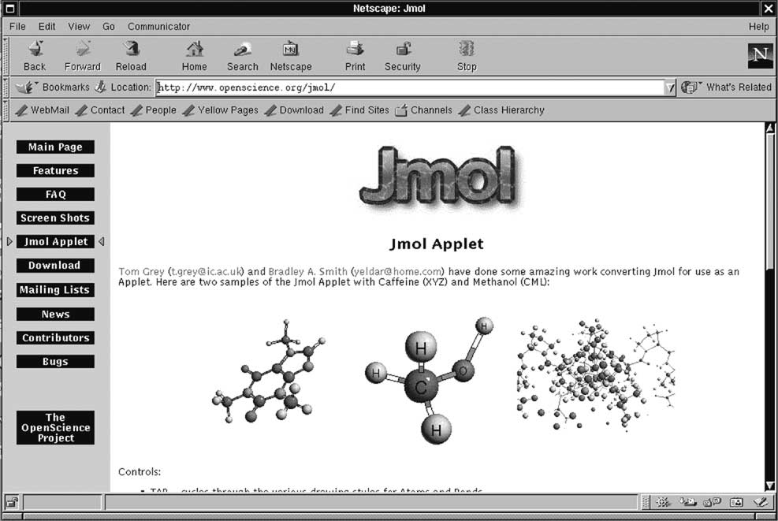
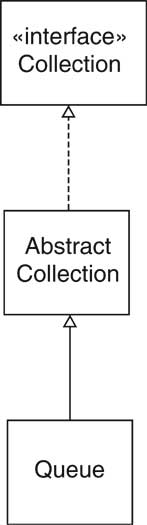

Object-Oriented Design & Patterns
Cay S. Horstmann
Chapter 8
Frameworks

Chapter Topics
- Frameworks
- Applets as a simple framework
- The collections framework
- A graph editor framework
- Enhancing the graph editor framework
Frameworks
- Set of cooperating classes
- Structures the essential mechanisms of a problem domain
- Example: Swing is a GUI framework
- Framework != design pattern
- Typical framework uses multiple design patterns
Application Frameworks
- Implements services common to a type of applications
- Programmer forms subclasses of framework classes
- Result is an application
- Inversion of control: framework controls execution flow
Applets
- Applet: Java program that runs in a web browser
- Programmer forms subclass of Applet or JApplet
- Overwrites
init/destroy
start/stop
paint
Applets

Applets
Example Applet
Example Applet

Applets as a Framework
- Applet programmer uses inheritance
- Applet class deals with generic behavior (browser interaction)
- Inversion of control: applet calls init, start,stop,destroy
Collections Framework
- Java library supplies standard data structures
- Supplies useful services (e.g. Collections.sort, Collections.shuffle)
- Framework: Programmers can supply additional data structures,
services
- New data structures automatically work with services
- New services automatically work with data structures
Collections Framework: Interface Types
- Collection: the most general collection interface
type
- Set: an unordered collection that does not permit
duplicate elements
- SortedSet: a set whose elements are visited in sorted
order
- List: an ordered collection
Collections Framework: Classes
- HashSet: a set implementation that uses hashing to
locate the set elements
- TreeSet: a sorted set implementation that stores the
elements in a balanced binary tree
- LinkedList and ArrayList: two implementations
of the List interface type
Collections Framework

Collection<E> Interface Type
- Collection holds elements in some way
- Different data structures have different storage strategies
boolean add(E obj)
boolean addAll(Collection c)
void clear()
boolean contains(E obj)
boolean containsAll(Collection c)
boolean equals(E obj)
int hashCode()
boolean isEmpty()
Iterator iterator()
boolean remove(E obj)
boolean removeAll(Collection c)
boolean retainAll(Collection c)
int size()
E[] toArray()
E[] toArray(E[] a)
Iterator<E> Interface Type
- Iterator traverses elements of collection
boolean hasNext()
E next()
void remove()
AbstractCollection Class
- Collection is a hefty interface
- Convenient for clients, inconvenientfor implementors
- Many methods can be implemented from others (Template method!)
- Example: toArray
public E[] toArray()
{
E[] result = new E[size()];
Iterator e = iterator();
for (int i = 0; e.hasNext(); i++)
result[i] = e.next();
return result;
}
AbstractCollection Class
- Can't place template methods in interface
- Place them in AbstractCollection class
- AbstractCollection convenient superclass for
implementors
- Only two methods undefined: size,iterator
Adding a new Class to the Framework
Adding a new Class to the Framework

Sets
- Set interface adds no methods to Collection!
- Conceptually, sets are a subtype of collections
- Sets don't store duplicates of the same element
- Sets are unordered
- Separate interface: an algorithm can require a Set
Lists
- Lists are ordered
- Each list position can be accessed by an integer index
- Subtype methods:
boolean add(int index, E obj)
boolean addAll(int index, Collection c)
E get(int index)
int indexOf(E obj)
int lastIndexOf(E obj)
ListIterator listIterator()
ListIterator listIterator(int index)
E remove(int index)
E set(int index, int E)
List subList(int fromIndex, int toIndex)
List Iterators
- Indexing
- Bidirectional behavior
- Subtype methods:
int nextIndex()
int previousIndex()
boolean hasPrevious()
E previous()
void set(E obj)
List Classes
- ArrayList
- LinkedList
- Indexed access of linked list elements is possible, but slow
- Weakness in the design
- Partial fix in Java 1.4: RandomAccess interface
List Classes

Optional Operations
- Many operations tagged as "optional"
- Example: Collection.add, Collection.remove
- Default implementation throws exception
- Why have optional operations?
Views
- View = collection that shows objects that are stored elsewhere
- Example: Arrays.asList
- String[] strings = { "Kenya", "Thailand", "Portugal" };
List view = Arrays.asList(strings)
- Does not copy elements!
- Can use view for common services
otherList.addAll(view);
Views
- get/set are defined to access underlying array
- Arrays.asList view has no add/remove
operations
- Can't grow/shrink underlying array
- Several kinds of views:
read-only
modifyable
resizable
. . .
- Optional operations avoid inflation of interfaces
- Controversial design decision
Graph Editor Framework
- Problem domain: interactive editing of diagrams
- Graph consists of nodes and edges
- Class diagram:
nodes are rectangles
edges are arrows
- Electronic circuit diagram:
nodes are transistors, resistors
edges are wires
Graph Editor Framework
- Traditional approach: programmer starts from scratch for every
editor type
- Framework approach: Programmer extends graph, node, edge classes
- Framework handles UI, load/save, ...
- Our framework is kept simple
- Violet uses extension of this framework
User Interface
- Toolbar on top
- Grabber button for selecting nodes/edges
- Buttons for current node/edge type
- Menu
- Drawing area
User Interface

Mouse Operations
- Click on empty space: current node inserted
- Click on node or edge: select it
- Drag node when current tool an edge: connect nodes
- Drag node when current tool not an edge: move node
Division of Responsibility
- Divide code between
-
- Rendering is app specific (e.g. transistor)
- Hit testing is app specific (odd node shapes)
- Framework draws toolbar
- Framework does mouse listening
Adding Nodes and Edges
- Framework draws toolbar
- How does it know what nodes/edges to draw?
- App gives a list of nodes/edges to framework at startup
- How does app specify nodes/edges?
-
- Class names? ("Transistor")
- Class objects? (Transistor.class)
- Node, Edge objects? (new Transistor())
Adding Nodes and Edges
- Objects are more flexible than classes
- new CircleNode(Color.BLACK)
new CircleNode(Color.WHITE)
- When user inserts new node, the toolbar node is cloned
Node prototype = node of currently selected toolbar
button;
Node newNode = (Node) prototype.clone();
Point2D mousePoint = current mouse position;
graph.add(newNode, mousePoint);
- Example of PROTOTYPE pattern
PROTOTYPE Pattern
Context
- A system instantiates objects of classes that are not known when
the system is built.
- You do not want to require a separate class for each kind of
object.
- You want to avoid a separate hierarchy of classes whose
responsibility it is to create the objects.
Solution
- Define a prototype interface type that is common to all created
objects.
- Supply a prototype object for each kind of object that the system
creates.
- Clone the prototype object whenever a new object of the given
kind is required.
PROTOTYPE Pattern

PROTOTYPE Pattern
Name in
Design Pattern
|
Actual name
(graph editor)
|
Prototype
|
Node
|
ConcretePrototype1
|
CircleNode
|
Creator
|
The GraphPanel that
handles the mouse operation for adding new nodes
|
Framework Classes
- Framework programmer implements Node/Edge
interfaces
- draw draws node/edge
- getBounds returns enclosing rectangle (to compute total
graph size for scrolling)
- Edge.getStart, getEnd yield start/end nodes
- Node.getConnectionPoint computes attachment point on
shape boundary
- Edge.getConnectionPoints yields start/end coordinates
(for grabbers)
- clone overridden to be public
Node Connection Points

Framework Classes
Framework Classes
- Graph collects nodes and edges
- Subclasses override methods
public abstract Node[] getNodePrototypes()
public abstract Edge[] getEdgePrototypes()
- Ch8/graphed/Graph.java
Framework UI Classes
- GraphFrame: a frame that manages the toolbar, the menu
bar, and the graph panel.
- ToolBar: a panel that holds toggle buttons for the node
and edge icons.
- GraphPanel: a panel that shows the graph and handles the
mouse clicks and drags for the editing commands.
- Application programmers need not subclass these classes
A Framework Instance
- Simple application
- Draw black and white nodes
- Join nodes with straight lines
Programmer responsibilities
- For each node and edge type, define a class that implements the Node
or Edge interface type
- Supply all required methods, such as drawing and containment
testing.
- Define a subclass of the Graph class and supply getNodePrototypes,
getEdgePrototypes
- Supply a class with a main method
A Framework Instance
A Framework Instance
Generic Framework Code
- Framework frees application programmer from tedious programming
- Framework can do significant work without knowing node/edge types
- Analyze two scenarios
-
Add New Node
public void mousePressed(MouseEvent event)
{
Point2D mousePoint = event.getPoint();
Object tool = toolBar.getSelectedTool();
...
if (tool instanceof Node)
{
Node prototype = (Node) tool;
Node newNode = (Node)prototype.clone();
graph.add(newNode, mousePoint);
}
...
repaint();
}
Add New Node
Add New Edge
- First check if mouse was pressed inside existing node
public Node findNode(Point2D p)
{
for (int i = 0; i < nodes.size(); i++)
{
Node n = (Node) nodes.get(i);
if (n.contains(p)) return n;
}
return null;
}
Add New Edge
- mousePressed:
-
- Check if mouse point inside node
- Check if current tool is edge
- Mouse point is start of rubber band
- mouseDragged:
-
- Mouse point is end of rubber band; repaint
- mouseReleased:
-
Add New Edge

Enhancing the Framework
- Edit node/edge properties
-
- Node colors
- Edge styles (solid/dotted)
- Framework enhancement: Edit->Properties menu pops up property
dialog
Enhancing the Framework

Enhancing the Framework
- How to implement the dialog?
- Solved in chapter 7--bean properties!
- CircleNode exposes color property:
Color getColor()
void setColor(Color newValue)
- Property editor automatically edits color!
Using the Framework Enhancement
- Add dotted lines
- Define enumerated type LineStyle
- Two instances LineStyle.SOLID, LineStyle.DOTTED
- Add lineStyle property to LineEdge
- LineStyle has method getStroke()
- LineEdge.draw calls getStroke()
- Supply property editor for LineStyle type
- Property editor now edits line style!
Another Framework Instance
- UML Class diagram editor
- "Violet lite"

Another Framework Instance
- RectangularNode
- SegmentedLineEdge
- GeneralPathEdge uses general path for containment
testing
- ArrowHead, BentStyle enumerate arrow and line
styles
- MultiLineString property for class compartments
- ClassNode, ClassRelationshipEdge, ClassDiagramGraph
- No change to basic framework!
Edge Properties
Enhancing the Framework II
- Violet is based on an enhancement of the book's framework
- Adds many options
-
- Can add 3 simple graph editor classes to that framework
- App tracks framework evolution at no cost to app programmer
Enhancing the Framework II